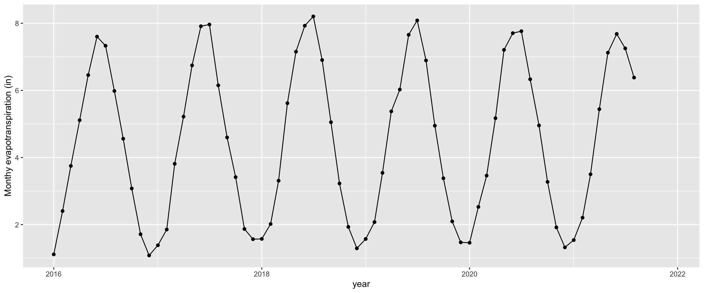
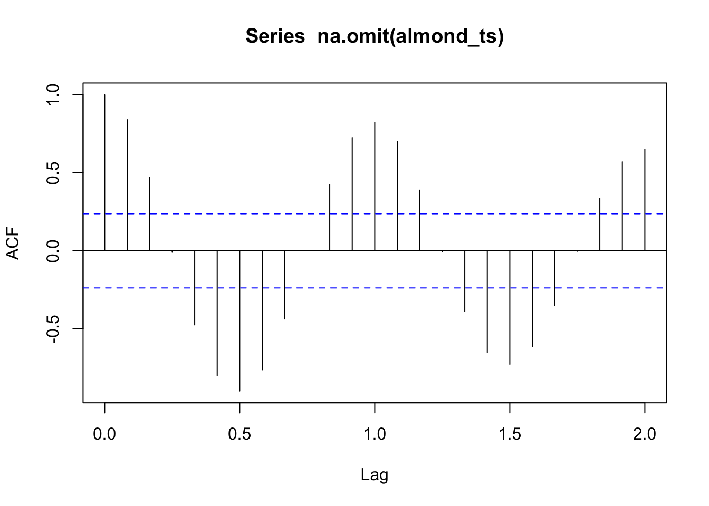
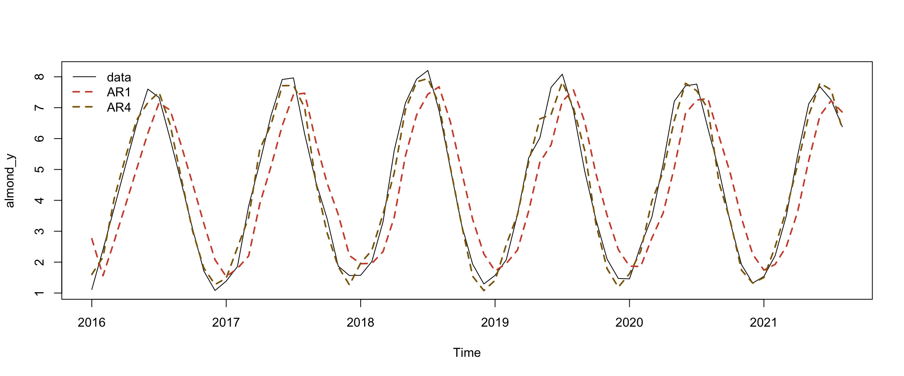
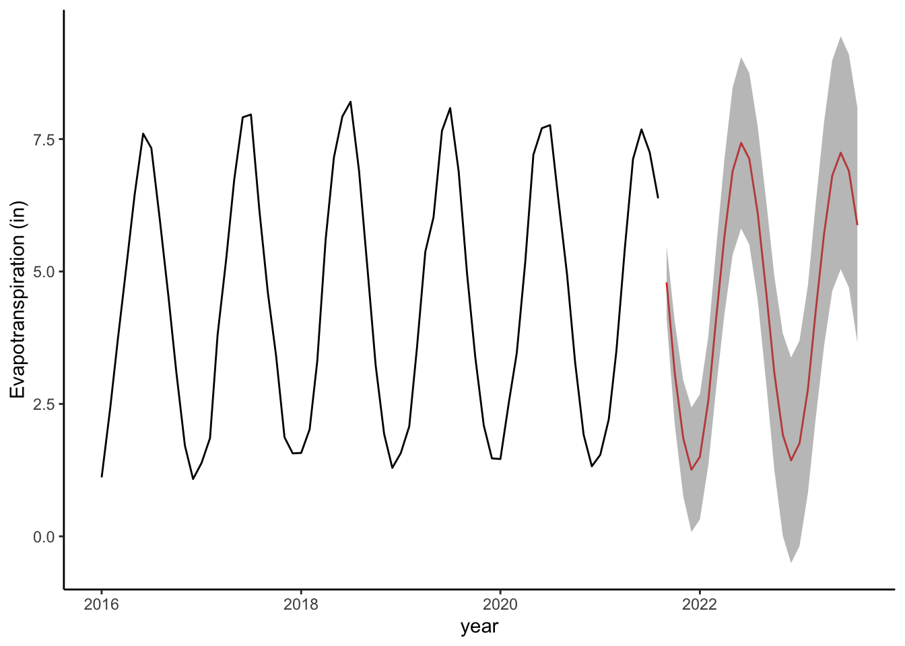

Chapter 7 Thirsty crops and water scarcity. An introduction to time series
by Heather Kropp for ENVST 325: Introduction to Environmental Data Science Hamilton College
7.1 Learning objectives
- Establish and visualize time series data
- Learn basic statistical evaluation of time series
- Forecast observations into the future
- Interpret satellite derived evapotranspiration for agriculture and water management
7.3 The problem: Irrigation and water security
California experienced drought throughout much of the late 2000s. As air temperatures continue to rise under climate change, droughts and water limitations will be heightened as warmer, drier conditions lead to greater evaporation of water from soils and surface water. These conditions also impact plant growth via transpiration. Plants limit water loss by reducing transpiration via stomatal closure, but as a consequence also limit the intake of carbon dioxide for photosynthesis. Many agricultural operations in warm, dry climates rely on irrigation to ensure that plants have enough water to adequately grow under these conditions when precipitation alone will not deliver enough water for plant growth. Irrigation can be sourced from surface water like rivers or reservoirs, but it can also be drawn from the groundwater using wells. Water security is an umbrella term for developing sustainable and reliable access to clean water that seeks to limit the potential for water related natural disasters.

A micro-irrigation set up in an almond orchard in California. Source: Photo courtesy of USDA Natural Resources Conservation Service. Public Domain.
California is a major source of agricultural production in the US with the California Department of Food and Agriculture citing over $49 billion of sales. To support agriculture within California’s dry climate, many agricultural fields are irrigated. The amount of ground water withdrawn for irrigation is attributed to ground subsidence throughout large portions of California. This means that the ground is sinking due to the extraction of belowground resources.

Left: a map of known causes of subsidence in California. Right: a USGS employee demonstrates differences recent and historical elevation at survey locations. Source: USGS
In addition to the subsidence issues, there are concerns about limitations in ground water. Ground water aquifers can take years-centuries to recharge. As surface water becomes more limiting under droughts, ground water may be increasingly depleted.
The USGS estimates agricultural irrigation accounts for 60% of California’s water use and the California Department of Water Resources estimates that agricultural irrigation accounts for 40% of total water use in the state. These discrepancies in water use estimates highlight the challenges in data availability and collection around water use. In this tutorial, we’ll explore a new type of data meant to help support monitoring and measuring agricultural water use for water managers. Monitoring water use can be an important step in ensuring water security in the future.
7.3.1 The data: satellite observations of evapotranspiration
Evapotranspiration (ET) describes the cumulative amount of water that is evaporated (from soil and bodies of water) and transpired (from plants) over an area of land per unit time. It can be a helpful measure for water managers since it represents the total amount of water lost to the atmosphere from the land surface. It is a measure of water consumption. In cases of irrigation, some water will infiltrate deeper into the soil before it can evaporate or be used by plants. This means that just measuring the amount of water pumped for irrigation would count that water as a loss even if it returned to the soil.
Several satellites can measure the surface temperature of land by taking images of far infrared radiation emitted from the earth’s surface. The process of evapotranspiration uses energy for the phase change from liquid to gas (refered to as latent heat), and thus areas with higher evapotranspiration are cooler than areas with lower rates. Using weather observations, land cover, and the constraints of the energy balance, evapotranspiration can be estimated from far infrared satellite imagery. The OpenET project (https://openetdata.org/) is sponsored by many government and academic agencies and seeks to make this data publicly available for the western United States. OpenET indicates that this data can help farmers estimate better understand their water use, water managers understand water demand and plan for future needs, and stands as a neutral data source for policy makers to understand water budgets.
OpenET estimates the cumulative (total) monthly evapotranspiration. The data portal includes an interactive map and an option to download data from individual fields.
I have downloaded data from 49 fields in southern California. These fields represent different types of crops. Read in ETdata.csv:
date Ensemble.ET NDVI crop fieldID
1 2016-01-01 0.842 0.337 Fallow/Idle Cropland 1
2 2016-02-01 1.442 0.422 Fallow/Idle Cropland 1
3 2016-03-01 1.252 0.431 Fallow/Idle Cropland 1
4 2016-04-01 2.246 0.324 Fallow/Idle Cropland 1
5 2016-05-01 2.543 0.325 Fallow/Idle Cropland 1
6 2016-06-01 2.296 0.290 Fallow/Idle Cropland 1The observations are cumulative totals over a monthly basis so the date column shows each month as occuring on the 1st of the month. The Ensemble.ET column gives cumulative ET calculated through an ensemble modeling process for each month and the units are in inches. This means that it is the total inches of water that evaporated/transpired over a standard area per month in inches. You can think of this type of measure of ET kind of like you would think about measuring rain in a rain gauge: adding up all of the liquid that evaporated and measuring the depth in inches for the month over a standard area. The NDVI column stands for the Normalized Difference Vegetation Index. It is a remotely sensed measure of the relative amount of photosynthetically active vegetation on the ground. It can range from -1 (all water) to 0 (no vegetation or water) to 1 (high amounts of photosynthetic vegetation). This type of observation can help contextualize ET since more plants will lead to more transpiration. The crop column is a character ID of the type of crop grown in the field. You can see that we will look at fallow fields and a few orchard and grain crops.
[1] "Fallow/Idle Cropland" "Corn" "Grapes (Table/Raisin)"
[4] "Almonds" "Pistachios" "Alfalfa" The fieldID is an integer identifier that counts each unique field in the data. There are replicates of different types of crops in different fields.
You will want to load the typical data wrangling and visualization packages, but you will also want to install the forecast package for working with time series.
7.4 The approach: Analyzing and forecasting a time series
7.4.1 Setting up a time series data type
Let’s start by looking at the time series for a single crop, almonds. You may have heard about the environmental impact of almond water use in California. The use of groundwater by almond farmers is contentious and some residential neighbors contribute their home wells drying up to the water use by commercial almond growers. Let’s characterize almond water use in the region with the multiple fields rather than looking at each individual almond field. Before you set up the time series, you will want to average the fields across each date:
# average fields for each month for almonds
almond <- ETdat %>% # ET data
filter(crop == "Almonds") %>% # only use almond fields
group_by(date) %>% # calculate over each date
summarise(ET.in = mean(Ensemble.ET, na.rm=TRUE)) # average fields
# visualize the data
ggplot(almond, aes(x=ymd(date),y=ET.in))+
geom_point()+
geom_line()+
labs(x="year", y="Monthy evapotranspiration (in)")
You can see from there is strong seasonality to the data with ET reaching the lowest levels in the winter months and the highest levels in the late spring and early summer. It also looks like some years might have higher ET than others. Accounting for seasonality and trends will be a major part of working with time series.
First, we must form the data as a time series object. A time series object will expect the data to be ordered in equal, consistent intervals. This means that there is no change in timing of the observations (for example, one month missing entirely or switch from monthly to weekly). The function ts creates a time series data type. The arguments to include are the vector of data occurring over time, the starting time (start), and the frequency of each observation in a unit. Here our units would be years with 12 months of observation within a unit.
7.4.2 Decomposing a time series
Decomposing a time series extracts the trend (change in values over time), seasonality (cyclical or regular patterns in the data typically occurring in one unit of time), and random error. In a simplified format where each of these components is additive, you can think of time series as a linear equation for each time point (t):
\[y_t = Trend_t + seasonality_t * error_t\]
You can create a decomposition of each of these elements using the decompose function:
# decompose almond ET time series
almond_dec <- decompose(almond_ts)
# plot decomposition
plot(almond_dec)
7.4.3 Autocorrelation
Autocorrelation is a measure of correlation from one observation to the observations before and after. Autocorrelation is an important consideration in both time series (an observation is related to what happend before it) and spatial data (observations closer in space will be similar to each other). Autocorrelation is an important consideration because it violates a lot of frequentist statistical assumptions: that observations are independent and random. If autocorrelated observations are close enough together in time (or space!), this implies that there is a relationship without independence and randomness between observations. This is why time series analysis are useful, because you can inherently evaluate observations that are not independent throughout time.
The autocorrelation factor (ACF) can be calculated using the acf function. The function looks at the correlation between observations and observations in increments into the past called lags. A lag period would look one unit of time into the past. acf will produce a plot of autocorrelation over lag periods within the data. Here a value of 1 means high positive association (both values will be higher values), a value of zero means that there is no correlation, and a value of -1 means a strong negative association (as one value is higher the other one is lower). The blue line indicates the range of values that represent a non-significant autocorrelation factor. The first lag period only has one measurement so it will always be perfectly correlated with itself. It is the next lag periods that you want to look at.

Stationarity is a condition of a time series where the mean and variance remains constant over time. Data that have seasonality or a trend will not be stationary data. Our ET data do not meet this assumption.
7.4.4 Autoregressive (AR) models for time series
Autoregressive models can be useful for modeling time series data. Instead of a simple linear regression with time as the independent variable, the model considers the previous value(s) of y in the equation. A 1\(^{st}\) order AR model uses an equation with one lag period (t-1) prior to the observation of interest (t).
\[y_t = \beta_0 + \beta_1 y_{t-1} + \epsilon_t\] A 2\(^{nd}\) order AR model uses an equation with two lag period (t-1 , t-2) prior to the observation of interest (t).
\[y_t = \beta_0 + \beta_1 y_{t-1}+ \beta_2 y_{t-2} + \epsilon_t\] You could continue on with more orders. However, typically past 3-4 orders you may risk adding additional parameters with little benefit. There are a few ways to select the order. You can choose look at the ACF or partial ACF. The partial ACF can better represent potential lag periods. You can run multiple AR models and look at model fit metrics and determine which orders are most important for model fit.

The ar function in R can be used to run an autoregressive model. The ar function gives limited information. However, we can run the arima function. ARIMA stands for Autoregressive Integrated Moving Average. It builds more coefficients into the AR model, but we would need to transform our data and cover further statistics to learn it. However, we can run just an AR model using the function if we specify the simplest form. This will return a standard error for coefficients and it will provide model fit statistics. Let’s omit the NAs to run the model in almond_ts before running the model.
almond_y <- na.omit(almond_ts)
model1 <- arima(almond_y , # data
order = c(1,0,0)) # first number is AR order all other numbers get a 0 to keep AR format
model1
Call:
arima(x = almond_y, order = c(1, 0, 0))
Coefficients:
ar1 intercept
0.8624 4.3608
s.e. 0.0603 0.9764
sigma^2 estimated as 1.45: log likelihood = -109.81, aic = 225.62The coefficient seems far from one and has a small se so this approach overall looks promising. The correlation plot looked like a higher order would be useful. Let’s try running a 4th order AR:
model4 <- arima(almond_y , # data
order = c(4,0,0)) # first number is AR order all other numbers get a 0 to keep AR format
model4
Call:
arima(x = almond_y, order = c(4, 0, 0))
Coefficients:
ar1 ar2 ar3 ar4 intercept
1.0147 -0.2878 0.1782 -0.5034 4.3840
s.e. 0.1066 0.1637 0.1614 0.1051 0.0724
sigma^2 estimated as 0.1208: log likelihood = -28.16, aic = 68.33The AIC dropped a lot from the 1st-4th order AR. Let’s look at the fitted values between the models to see how they match the observations. You can calculate the fitted values by subtracting the residuals from the data:
# calculate fit
AR_fit1 <- almond_y - residuals(model1)
AR_fit4 <- almond_y - residuals(model4)
#plot data
plot(almond_y)
# plot fit
points(AR_fit1, type = "l", col = "tomato3", lty = 2, lwd=2)
points(AR_fit4, type = "l", col = "darkgoldenrod4", lty = 2, lwd=2)
legend("topleft", c("data","AR1","AR4"),
lty=c(1,2,2), lwd=c(1,2,2),
col=c("black", "tomato3","darkgoldenrod4"),
bty="n")
The model fit for the 4th order AR looks encouraging and close enough to the observations that this model would be useful to forecast future near-term observations. The model also tells us that evapotranspiration 1-4 months in the past influence current values. This would be relevant information for farmers and water managers. For example, the first coefficient is a positive value indicating that higher ET in the previous month is associated with higher ET in the current month.
7.4.5 Forecast future data
The forecast function allows you to forecast data and give you an uncertainty interval. Let’s look at our AR4 model forecast:
Point Forecast Lo 80 Hi 80 Lo 95 Hi 95
Sep 2021 4.794693 4.3493294 5.240056 4.113568340 5.475817
Oct 2021 3.076415 2.4419259 3.710904 2.106047627 4.046782
Nov 2021 1.851318 1.1359725 2.566664 0.757291217 2.945346
Dec 2021 1.257720 0.4878752 2.027566 0.080343660 2.435097
Jan 2022 1.501016 0.7295535 2.272479 0.321165752 2.680867
Feb 2022 2.565412 1.7684838 3.362339 1.346615761 3.784207
Mar 2022 4.086355 3.2227418 4.949968 2.765572570 5.407138
Apr 2022 5.665450 4.7075356 6.623364 4.200446271 7.130454
May 2022 6.897167 5.8645887 7.929745 5.317974806 8.476359
Jun 2022 7.427680 6.3696712 8.485689 5.809594957 9.045766
Jul 2022 7.127210 6.0687936 8.185625 5.508502096 8.745917
Aug 2022 6.094198 5.0211613 7.167235 4.453129855 7.735267
Sep 2022 4.606985 3.4812042 5.732766 2.885251868 6.328718
Oct 2022 3.074651 1.8780381 4.271263 1.244589718 4.904712
Nov 2022 1.915046 0.6655250 3.164567 0.004068525 3.826024
Dec 2022 1.434458 0.1656974 2.703219 -0.505943894 3.374860
Jan 2023 1.756184 0.4872558 3.025113 -0.184474449 3.696843
Feb 2023 2.785704 1.5037224 4.067685 0.825082362 4.746325
Mar 2023 4.235852 2.9113341 5.560369 2.210176855 6.261527
Apr 2023 5.710236 4.3287953 7.091677 3.597504579 7.822968
May 2023 6.810386 5.3864426 8.234329 4.632652614 8.988119
Jun 2023 7.242478 5.8038696 8.681086 5.042316229 9.442640
Jul 2023 6.896989 5.4583394 8.335638 4.696764461 9.097213
Aug 2023 5.875893 4.4255217 7.326263 3.657741771 8.094043The output is a 24 month time series with a prediction and a prediction interval (including a 95% range). You will have to format a date and set up a data frame to plot it:
#make dataframe for plotting
newAlmondF <- data.frame(newAlmond)
# set up dates
years <- c(rep(2021,4),rep(2022,12), rep(2023,8))
month <- c(seq(9,12),seq(1,12), seq(1,8))
newAlmondF$dateF <- ymd(paste(years,"/",month,"/",1))# make a plot with data and predictions including a prediction interval
ggplot() +
geom_line(data = almond, aes(x = ymd(date), y = ET.in))+
xlim(ymd(almond$date[1]),newAlmondF$dateF[24])+ # Plotting original data
geom_line(data = newAlmondF, aes(x = dateF, y = Point.Forecast),
col="red") + # Plotting model forecasts
geom_ribbon(data=newAlmondF,
aes(x=dateF,ymin=Lo.95,
ymax=Hi.95), fill=rgb(0.5,0.5,0.5,0.5))+ # uncertainty interval
theme_classic()+
labs(x="year", y="Evapotranspiration (in)")Warning: Removed 4 rows containing missing values or values outside the scale range
(`geom_line()`).
7.5 Conclusions
Time series analysis helped us better understand ET in almond orchards. We observed strong, consistent seasonal patterns. The overall trend showed that there was an initial increase in ET from 2016-2017, but ET stabilized in recent years. We found that current ET was influenced by ET in previous 4 months, and were able to forecast data for missing months at the end of our time series. These forecasts indicate that if conditions are similar to previous years, we can expect to see similar values of ET as previous years. This can help with short term planning in addition to understanding the historical consumption of water. In your homework, you will examine trends in other types of agricultural fields.
7.6 Citations
Subsidence in California Map and Images. https://www.usgs.gov/centers/land-subsidence-in-california